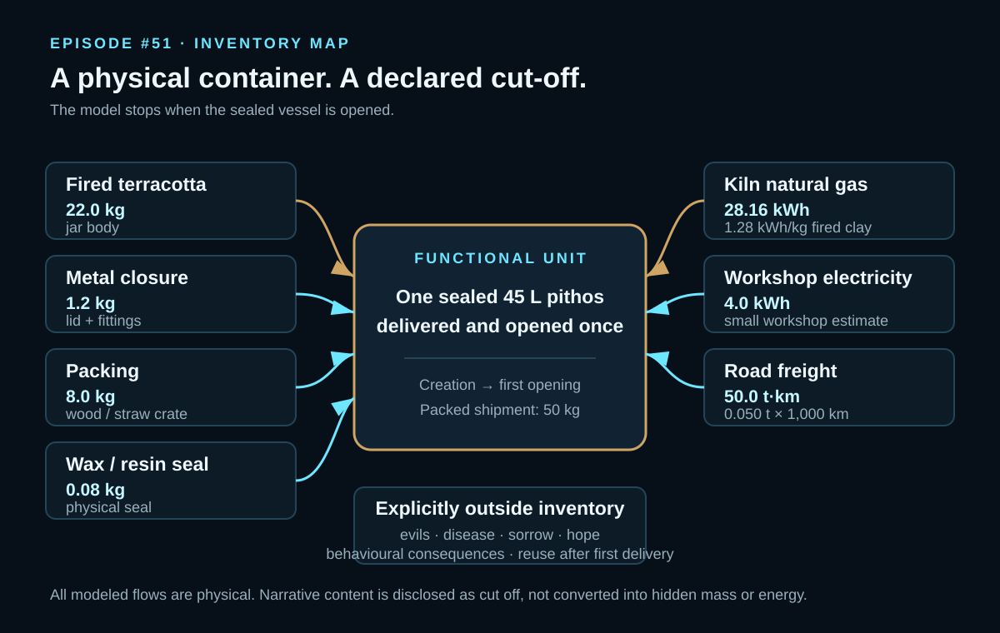
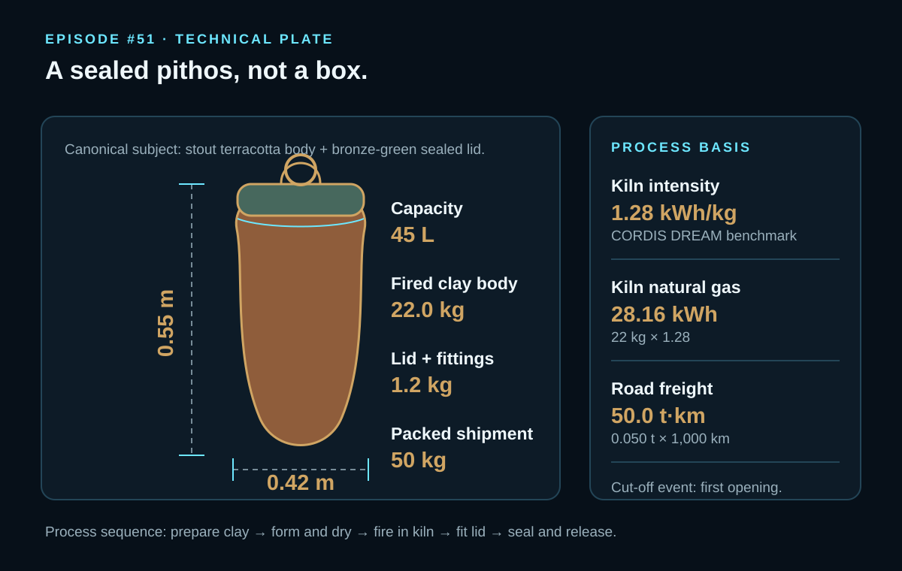
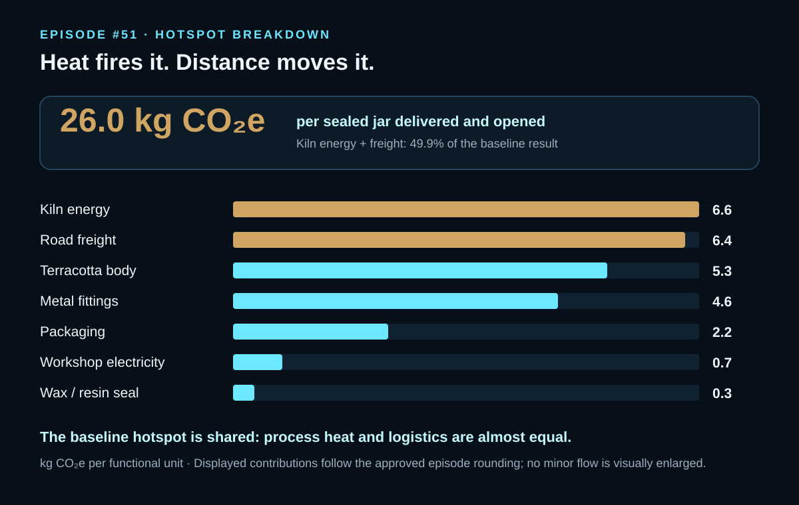

EPISODE #51 · MYTHS & LEGENDS
Pandora's Jar
What does the model reveal when the forbidden payload is explicitly cut off?
THE SUBJECT
A jar is not a metaphor.
The approved model converts the myth into one physical service: one sealed ceramic pithos delivered to a household and opened once. The non-physical payload is not assigned hidden mass, energy or emissions.
The reference object is a stout 45 L terracotta pithos, 0.55 m high and 0.42 m in body diameter, with a 22.0 kg fired-clay body and 1.2 kg of lid and metal fittings. The packed shipment is 50 kg.
The system includes the vessel, closure, seal, kiln and workshop energy, packing and freight. Evils, disease and sorrow, hope as metaphysical content, behavioural consequences and reuse after the first delivery are explicitly excluded. The cut-off event is the first opening.
45 L pithos
0.55 m high, 0.42 m body diameter and 22.0 kg of fired clay.
Boundary discipline
The model runs from creation to first opening; the mythical payload remains outside the physical inventory.
Two hotspots
Kiln energy contributes 6.6 kg CO₂e and freight 6.4 kg CO₂e; together they explain 49.9% of the baseline.
Model risk
Kiln intensity is the principal uncertainty: the reported efficient and high cases range from 23.6 to 40.1 kg CO₂e.
VISUAL MODEL
From clay and heat to one sealed delivery
The analytical graphics preserve the approved physical flows, reconstruction parameters and declared cut-off.


LIFE CYCLE INVENTORY
Seven physical flows. No hidden math.
Activity data, source IDs and contribution values follow the approved episode. Freight is mass multiplied by distance, not distance alone.
| Stage | Component / activity | Activity data | Climate change | Modelling basis |
|---|---|---|---|---|
| Materials | Fired terracotta | 22.0 kg | 5.3 kg CO₂e | S1 · DEFRA 2026 Bricks proxy · 0.241803 kg CO₂e/kg. |
| Materials | Metal lid / fittings | 1.2 kg | 4.6 kg CO₂e | S2 · DEFRA 2026 Metals · 3.821949 kg CO₂e/kg. |
| Packaging | Wood / straw packing | 8.0 kg | 2.2 kg CO₂e | S3 · DEFRA 2026 Wood · 0.269504 kg CO₂e/kg. |
| Materials | Wax / resin seal | 0.08 kg | 0.3 kg CO₂e | S4 · DEFRA 2026 Plastics proxy · 3.170507 kg CO₂e/kg. |
| Process energy | Kiln natural gas | 28.16 kWh | 6.6 kg CO₂e | S5 · DEFRA 2026 natural gas + WTT · 0.23546 kg CO₂e/kWh. Kiln intensity S8: 1.28 kWh/kg from CORDIS DREAM. |
| Workshop | Electricity | 4.0 kWh | 0.7 kg CO₂e | S6 · DEFRA 2026 composite electricity consumption · 0.18436 kg CO₂e/kWh. |
| Logistics | Road freight | 50.0 t·km | 6.4 kg CO₂e | S7 · DEFRA 2026 HGV + WTT · 0.12715 kg CO₂e/t·km; 0.050 t × 1,000 km. |
Included
Terracotta body, metal lid and fittings, wax/resin seal, kiln and workshop energy, crate, packing and freight.
Excluded
Evils, disease and sorrow; hope as metaphysical content; behavioural consequences; reuse after first delivery.
Proxy disclosure
Fired clay is represented by the DEFRA brick factor. The kiln benchmark comes from ceramic-sector literature because DEFRA has no dedicated terracotta firing factor.
Audit trail
The episode assigns each visible emission factor a source ID S1–S8 and explicitly separates activity equations for kiln gas and freight.
HOTSPOT
A small footprint, with two hotspots
Process heat and transport are nearly equal and together account for 49.9% of the approved baseline.

Main result
26.0 kg CO₂e
Per sealed jar delivered and opened once.
Kiln energy
6.6 kg CO₂e
The largest single contribution in the approved baseline.
Freight
6.4 kg CO₂e
Almost equal to kiln energy despite the small vessel.
Combined hotspot
49.9%
Kiln energy and freight jointly explain almost half of the baseline footprint.
Sensitivity A · mass and distance
Light jar → 22.8 kg CO₂e
Baseline → 26.0 kg CO₂e
Heavy jar → 30.4 kg CO₂e
Short delivery → 21.3 kg CO₂e
Long delivery → 32.4 kg CO₂e
The approved episode varies clay mass or freight distance one at a time and does not change an emission factor. It identifies the long case as a 2,000 km journey; the light, heavy and short scenario parameter values are not separately stated in the carousel.
Sensitivity B · kiln and crate
Efficient kiln · 0.80 kWh/kg → 23.6 kg CO₂e
Baseline · 1.28 kWh/kg → 26.0 kg CO₂e
Craft kiln high · 4.00 kWh/kg → 40.1 kg CO₂e
No crate reuse · wood ×2 → 28.2 kg CO₂e
The data risk is not the mythical payload; it is how inefficiently the jar is fired.
What the model tells us
The vessel is ordinary. Heat and motion dominate. A long delivery can add more than a heavier vessel, while the non-physical payload remains outside the inventory.
Boundary interpretation
The episode does not convert hope, sorrow or behavioural consequences into emissions. The lesson is methodological: the boundary decision is visible and explicit.
THE VERDICT
“The smallest sealed object can expose the largest boundary choice.” The real environmental lesson is not release; it is boundary discipline.